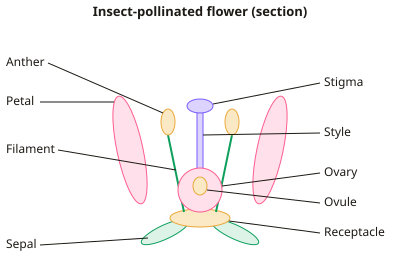

A-level Biology Year 12 · Topic 8
Reproduction and plant biology
Reproduction and plant biology covers how new life begins in flowering plants and in mammals, and how we use plants as materials and medicines.
We will look at flower structure, pollination and double fertilisation, then how sperm and eggs are made and what happens at the moment of fertilisation.
Finally we look at plant fibres and their strength, mineral ions and deficiency, and how drugs from plants are found and tested.
- 6 subtopics
- 215 questions
- Free: 8.1 notes and 10 questions
In this topic
- 8.1Sexual reproduction in flowering plants: flower structure, pollination and fertilisationFree below · 38 questions
- 8.2Gametogenesis in humans: spermatogenesis and oogenesisOpen in Full Marks · 44 questions
- 8.3Fertilisation in mammals: acrosome reaction and cortical reactionOpen in Full Marks · 34 questions
- 8.4Plant fibres and cellulose: structure and practical on tensile strengthOpen in Full Marks · 31 questions
- 8.5Plant mineral ions and deficiency: practical investigationOpen in Full Marks · 38 questions
- 8.6Plants as sources of drugs and antimicrobials: testing and drug trialsOpen in Full Marks · 30 questions
8.1 · Free notes
Sexual reproduction in flowering plants: flower structure, pollination and fertilisation

Key points
- Sepals (green) protect the flower bud, and petals of insect-pollinated flowers are large, brightly coloured and scented, with nectaries, to attract insects.
- The male part is the stamen: an anther (containing pollen sacs) held on a filament. Diploid pollen mother cells divide by meiosis to form haploid pollen grains.
- The female part is the carpel: stigma (receives pollen), style and ovary. The ovary contains one or more ovules, and each ovule contains an embryo sac with the egg cell, two polar nuclei and a micropyle (a gap in the ovule wall).
- The embryo sac forms when a diploid cell in the ovule divides by meiosis, and the surviving haploid cell then divides by mitosis three times. This gives 8 haploid nuclei, including the egg cell and the two polar nuclei.
- Pollination is the transfer of pollen from an anther to a stigma. Self-pollination is within the same plant; cross-pollination is between different plants and gives greater genetic variation.
- Insect-pollinated flowers have large petals, nectar, and sticky or spiky pollen. Wind-pollinated flowers have small dull petals, long exposed anthers, large feathery stigmas, and large amounts of light, smooth pollen.
- A pollen grain has a tough exine wall, a tube nucleus and a generative nucleus. The generative nucleus divides by mitosis to give two haploid male gametes.
- On landing, the pollen grain absorbs water and germinates in response to sugars and chemicals on the stigma. The pollen tube grows down the style by chemotropism, controlled by the tube nucleus, and releases enzymes to digest the style tissue. It enters the ovule through the micropyle.
- Double fertilisation: one male gamete fuses with the egg cell to form a diploid zygote (embryo). The other fuses with the two polar nuclei to form a triploid (3n) endosperm nucleus, which becomes the food store.
- After fertilisation the ovule becomes the seed (the integuments form the testa) and the ovary becomes the fruit. Practical: germinate pollen in different sucrose concentrations (e.g. 0–30%), count germinated grains under a microscope and calculate % germination = germinated ÷ total × 100. Repeat for reliability.
In more detail
- Pollen grain development: diploid pollen mother cells divide by meiosis to give four haploid microspores; each divides by mitosis to give a tube nucleus and a generative nucleus.
- Embryo sac: the surviving haploid megaspore divides by mitosis three times to give eight nuclei, including the egg cell and two polar nuclei.
- Wind-pollinated features: small dull petals, no nectar or scent, anthers and stigmas hanging outside the flower, large feathery stigmas and lots of light, smooth pollen.
- Endosperm: triploid (3n) tissue that stores food for the developing embryo; in cereals such as wheat it is the main food store of the grain.
Practice
Sexual reproduction in flowering plants: flower structure, pollination and fertilisation: 10 questions
Pick an answer to check it, or open the answer for the explanation.
1. Which part of a flower receives pollen during pollination?
- Style
- Ovule
- Stigma
- Anther
Show answer
C: Stigma. The stigma is the receptive surface of the carpel. Pollen is transferred from the anther (which produces it) to the stigma. The ovule contains the egg cell.
2. What is the ploidy of the endosperm nucleus formed in double fertilisation?
- Haploid (n)
- Diploid (2n)
- Triploid (3n)
- Tetraploid (4n)
Show answer
C: Triploid (3n). One haploid male gamete fuses with two haploid polar nuclei, giving n + n + n = 3n. The other male gamete fuses with the egg to give the diploid zygote.
3. Why is fertilisation in flowering plants described as 'double'?
- Two pollen tubes enter each ovule
- Two eggs are fertilised in each ovule
- Two male gametes fuse with two different female nuclei or cells
- Fertilisation occurs twice in each flower
Show answer
C: Two male gametes fuse with two different female nuclei or cells. One male gamete fuses with the egg cell (forming the zygote) and the second fuses with the two polar nuclei (forming the endosperm nucleus).
4. Pollen tubes grow towards the ovule in response to chemicals. What is this growth response called?
- Hydrotropism
- Chemotropism
- Geotropism
- Phototropism
Show answer
B: Chemotropism. Growth directed by a chemical stimulus is chemotropism. Phototropism is a response to light, geotropism to gravity and hydrotropism to water.
5. Which feature would you expect in a wind-pollinated flower?
- Large, brightly coloured petals
- Feathery stigmas hanging outside the flower
- Nectaries at the base of the petals
- Sticky, spiky pollen grains
Show answer
B: Feathery stigmas hanging outside the flower. Wind-pollinated flowers have large feathery stigmas exposed to catch airborne pollen. The other features suit insect pollination.
6. A slide shows 150 pollen grains in sucrose solution, of which 36 have produced pollen tubes. What is the percentage germination?
- 4.2%
- 76%
- 24%
- 36%
Show answer
C: 24%. % germination = germinated ÷ total × 100 = 36 ÷ 150 × 100 = 24%.
7. How many nuclei are in a mature embryo sac before fertilisation?
- 2
- 4
- 8
- 16
Show answer
C: 8. The embryo sac forms after meiosis followed by three mitotic divisions of the surviving haploid cell, giving 8 haploid nuclei. They include the egg and two polar nuclei.
8. What is the main genetic advantage of cross-pollination over self-pollination?
- Fertilisation is guaranteed
- Offspring show greater genetic variation
- Fewer pollen grains are needed
- Offspring are identical to the parent
Show answer
B: Offspring show greater genetic variation. Gametes from two different plants combine, so offspring have new allele combinations. This increases variation and the chance that some survive environmental change.
9. Through which structure does the pollen tube enter the ovule?
- Style
- Funicle
- Stigma
- Micropyle
Show answer
D: Micropyle. The micropyle is a small gap in the ovule wall through which the pollen tube enters to reach the embryo sac. The style is the tissue the tube grows through before reaching the ovary.
10. Which statement about pollen grains is correct?
- The generative nucleus divides by meiosis to form two gametes
- The tube nucleus fuses with the egg cell
- The pollen grain wall is thin and easily digested
- The generative nucleus divides by mitosis to form two male gametes
Show answer
D: The generative nucleus divides by mitosis to form two male gametes. Pollen grains are already haploid, so the generative nucleus divides by mitosis to give two genetically identical haploid male gametes. The tube nucleus controls tube growth.
Keep going in Full Marks
Full Marks has 38 questions on Sexual reproduction in flowering plants: flower structure, pollination and fertilisation (28 more than here), set out in practice levels. You also get notes and 3D models for all 6 subtopics of Reproduction and plant biology, plus games, timed exams and past papers.
On your exam board
Not in the AQA, OCR A, OCR B and Cambridge specifications.